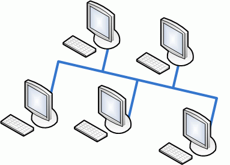
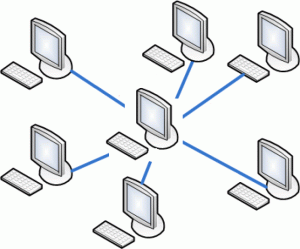
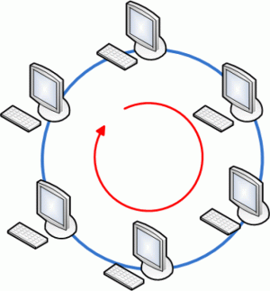

Топология сетей
Термин «топология», или «топология сети», характеризует физическое расположение компьютеров, кабелей и других компонентов сети. Топология — это стандартный термин, который используется профессионалами при описании основной компоновки сети. Если Вы поймете, как используются различные топологии, Вы сумеете понять, какими возможностями обладают различные типы сетей. Чтобы совместно использовать ресурсы или выполнять другие сетевые задачи, компьютеры должны быть подключены друг к другу. Для этой цели в большинстве сетей применяется кабель. Однако просто подключить компьютер к кабелю, соединяющему другие компьютеры, не достаточно. Различные типы кабелей в сочетании с различными сетевыми платами, сетевыми операционными системами и другими компонентами требуют и различного взаимного расположения компьютеров. Каждая топология сети налагает ряд условий. Например, она может диктовать не только тип кабеля, но и способ его прокладки. Топология может также определять способ взаимодействия компьютеров в сети. Различным видам топологий соответствуют различные методы взаимодействия, и эти методы оказывают большое влияние на сеть.
Шина
Топологию «шина» часто называют «линейной шиной» (linear bus). Данная топология относится к наиболее простым и широко распространенным топологиям. В ней используется один кабель, именуемый магистралью или сегментом, вдоль которого подключены все компьютеры сети.
Передача сигнала
Данные в виде электрических сигналов передаются всем компьютерам сети; однако информацию принимает только тот, адрес которого соответствует адресу получателя, ' зашифрованному в этих сигналах. Причем в каждый момент времени только один компьютер может вести передачу.Так как данные в сеть передаются лишь одним компьютером, ее производительность зависит от количества компьютеров, подключенных к шине. Чем их больше, т.е. чем больше компьютеров, ожидающих передачи данных, тем медленнее сеть. Однако вывести прямую зависимость между пропускной способностью сети и количеством компьютеров в ней нельзя.
Нарушение целостности сети
Разрыв сетевого кабеля происходит при его физическом разрыве или отсоединении одного из его концов. Возможна также ситуация, когда на одном или нескольких концах кабеля отсутствуют терминаторы, что приводит к отражению электрических сигналов в кабеле и прекращению функционирования сети. Сеть «падает». Сами по себе компьютеры в сети остаются полностью работоспособными, но до тех пор, пока сегмент разорван, они не могут взаимодействовать друг с другом.
Звезда
При топологии «звезда» все компьютеры с помощью сегментов кабеля подключаются к центральному компоненту, именуемому концентратором (hub). Сигналы от передающего компьютера поступают через концентратор ко всем остальным. Эта топология возникла на заре вычислительной техники, когда компьютеры были подключены к центральному, главному, компьютеру.
Кольцо
При топологии «кольцо» компьютеры подключаются к кабелю, замкнутому в кольцо. Поэтому у кабеля просто не может быть свободного конца, к которому надо подключать терминатор. Сигналы передаются по кольцу в одном направлении и проходят через каждый компьютер. В отличие от пассивной топологии «шина», здесь каждый компьютер выступает в роли репитера, усиливая сигналы и передавая их следующему компьютеру. Поэтому, если выйдет из строя один компьютер, прекращает функционировать вся сеть.